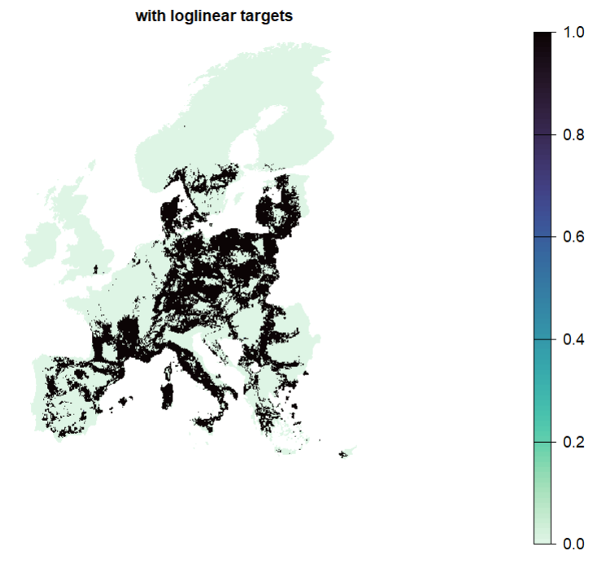
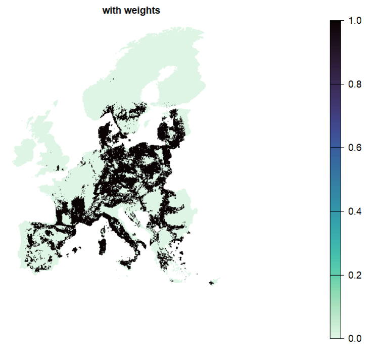
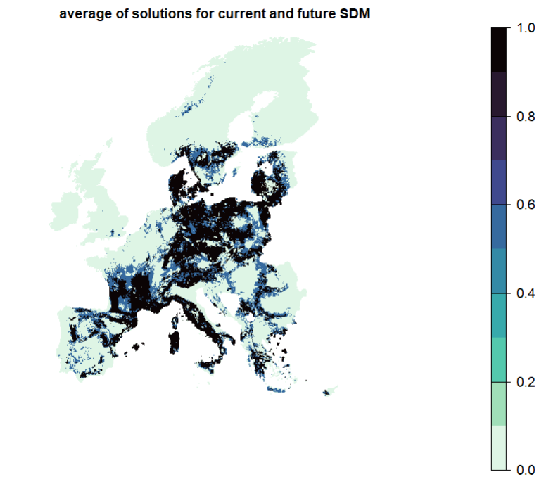
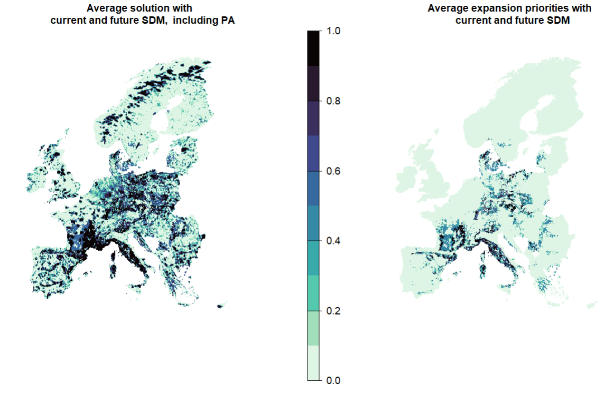

In the sections below we will explore some ways of how complexity aspects can be added to a planning problem. With complexity in this context is meant the addition of any planning aspects that go beyond ‘default’ inputs. For example adding lock-in or lock-out constraints, altering decision variables or feature weights.
6.1 Modify targets
In the previous section we often made use of objective functions that require targets. Targets can be specified in multiple way and added to a conservation problem as manual, relative or absolute targets (the functions here written in the same way).
Another very common ways of specifying targets is the use of a log-linear function as first defined by Rodrigues et al. (2004) . Here, instead of assigning equal targets to all features, let’s use log-linear targets, so that: features that have a smaller range size (e.g. 10 grid cells) get a target of 100% (their target is their entire range size); and features that are widespread (e.g. with a range size of at least 10,000 grid cells) have a target of 50% of their range size.
Loglinear targets require a lower and upper target and amount to be specified. They can also handle capped values (such as habitats not larger than XX km2.

Tip
Targets can also be informed by both the range size and the minimum amount necessary to prevent species extinction broadly following IUCN Redlist criteria (see Jung et al. (2021) ).
6.2 Add feature specific weights
In most cases features in a solution are not equally important. For example there might be genuine national interests in conserving local populations or species might be otherwise more threatened, which would not really well be covered by targets specified on range size alone. In this situations it might be worth changing the weights for these species.
Another common reason for weight is when there is feature imbalance, e.g. some types of features (species) are more common that others (Nature contributions to people). See Jung et al. (2021) for more information for this case.
# Here we specfiy weights to the tree species as a multiplicator based on redlist criteria.p2 <- p1 %>%add_feature_weights(redlist.trees$weight)s2 <-solve(p2)plot(s2)

Notice how in this case the solution does not change drastically, since only a few species are listed as vulnerable. But try and altering a few weights manually (for example multiplying them by 100) just as test to see how solutions change.
6.3 Plan for future distributions under climate change
Species distribution model (SDMs) are common inputs to SCP exercises. Just as common is also to use SDMs to make future projections of a given species under a climate scenario. More and more approaches are being developed to make use of such future projections in SCP exercises and in particular with linear programming as well (see for example Alagador & Cerdeira (2017)).
The simplest approach of making use of future projections is to incorporate them as features:
# create problem with future distributions as features:p2_bis <-problem(PU, spp.rcp85) %>%add_min_shortfall_objective(budget = budget.area)%>%add_loglinear_targets(10, 1, 10^4, 0.5) %>%add_feature_weights(redlist.trees$weight) %>%add_cbc_solver()%>%add_proportion_decisions()s2_bis <-solve(p2_bis)
1
Notice that we use a different feature set here
2
We make use proportional decisions here.
Which sites emerge as top priorities for these species, in both current and future climate conditions?
mean_s_climate <-mean(s2, s2_bis)plot(mean_s_climate, col = viridisLite::mako(n =1, direction =-1), axes = F)

You could also try to prioritize for both current and future (and their intersection at once). What do you expect will happen in this case? See also Kujala et al. (2013) who developed this conceptual approach.
6.4 Adding protected areas
Expanding a reserve network of protected areas is a common research question for SCP studies. Protected areas an be incorporated in various ways in the problem formulation and he we are showing some of them:
6.4.1 Locked in and bounded constraints
The simplest way is to ‘lock’ the area covered by Protected areas (PAs) into the solution. This means that all solutions will have - at a minimum - this amount of area present.
In this case the budget cannot be met, because protected areas (small or large) are present in more than 30% of all planning units. The locked in constraints functionality locks in cells that have non zero and non NA values. This functionality is not suitable for European PA at 10x10k resolution: we would need, for example, to change the PA layer to a binary layer with a threshold.
Let’s try again with the manual bounded constraints functionality to incorporate the proportion of the planning unit that is currently protected.
# create manual bounded constraints dataframe with protected area coverage per planning unitpa_constraints <-data.frame(pu =cells(PA),lower =unname(PA[!is.na(PA)]),upper =1)p3 <- p2 %>%add_manual_bounded_constraints(pa_constraints)s3 <-solve(p3)
1
grid cell ID
2
lower bound that needs to be included in the solution = proportion of grid cell already protected
3
upper bound set to 1 everywhere, so that the whole planning unit can be selected
4
locks in proportional PA coverage per planning unit
6.4.2 Towards climate resilient priorities
Now, let’s find top priorities for the expansion of existing protected areas but that uses projections of species distributions under a future climate scenario (RCP8.5).
## create problem with future distributions as features:p3_bis <-problem(PU, spp.rcp85)%>%add_min_shortfall_objective(budget = budget.area)%>%add_loglinear_targets(10, 1, 10^4, 0.5) %>%add_feature_weights(redlist.trees$weight) %>%add_manual_bounded_constraints(pa_constraints)%>%add_cbc_solver()%>%add_proportion_decisions()s3_bis <-solve(p3_bis)
1
to lock in proportional PA coverage per planning units
2
Despite specifying this often entire grid cells (planning units) will be selected in the solution rather than a proportion
What areas emerge as climatically resilient protected area expansion priorities for these 67 species? Average across the two solutions that expand on protected areas with current and future distributions:
mean_s_climate_PA <-mean(s3, s3_bis)expansion_climate_PA <- mean_s_climate_PA - PAplot(c(mean_s_climate_PA, expansion_climate), axes = F, col = viridisLite::mako(n =10, direction =-1), main =c("Average solution with \n current and future SDM, including PA","Average expansion priorities with \n current and future SDM"))

6.5 Add locked-out constraints
Locked-out constraints are the exact opposite of Section 6.4.1 explained above. Rather than starting from a given ‘baseline’ we want to explicitly exclude specific areas from any solution. This functionality can be particular helpful when there is prior knowledge about areas unlikely to be relevant for the planning problem (e.g. densely-population urban areas for protected area planning).
This MUST come AFTER the manual bounded constraints (if using), otherwise locked out constraints are ignored. Note that locked out constraints can sometimes also conflict with the manual bounded constraints, in other words locked in PA might become locked out…
6.6 Adding (socio-economic) costs
In prioritizr, the actual “cost” is tied to the value of the planning units, which then determines the budget. The normal or most common way of including costs in the prioritization is thus through the planning unit object. For example, if the aim is not meet a certain amount of area target but rather to select areas until a ‘budget’ has been reached, then the ideal way is usually to modify the PU file directly (not shown in this tutorial, but can be easily modified).
If however both are relevant questions to be asked, so when we need to express the budget in terms of number of grid cells and not overall socio-economic cost of the solution, we need to include any socio-economic constraints as (linear) penalties.
Linear penalties can be used to avoid the selection of sites with a high value, for example, socio-economic costs if available. Here, we use the human modification index as proxy for the cost of selecting a given planning unit.
p5 <- p4 %>%add_linear_penalties(penalty =1, data = gHM)s5 <-solve (p5)
1
Note that when penalty score is set too high, this sometimes prevents the budget area from being met.
Similar as weights, there is no definitive way of what can good penality constants here. In the best case those are informed by ecological or other reasoning and subject to a sensitivity test (try altering the values through a sequence).
Note
Note: if one wanted to express the entire budget of the problem in monetary terms, the costs would need to be included in the planning units data.
6.7 Linear penalties with negative penalty score
Linear penalties can also be used with a negative penalty score, to nudge the selection of sites with a high value. For example, one may use linear penalties with a negative penalty score to incorporate pre-defined ecological corridors; known climate refugia; intactness; etc.
Here, we use NDVI as an example, which can be interpreted as a proxy for vegetation health.
p6 <- p5 %>%add_linear_penalties(penalty =-1, data = ndvi)s6 <-solve(p6)
1
Negative penalty score can be used if we want to nudge selection of sites with high value in the spatial data layer.
Important
Sometimes adding constraints and penalties will tend to drive the solution much more strongly than the biodiversity features themselves. To limit the influence of the penalty data layer, you can consider decreasing the penalty value.
6.8 Decision variables
So far, we solved problems as proportional decisions. Proportional decisions means that proportions of planning units (rather than the whole one) can be selected in the solution. This typically solves much faster and better than binary decisions. Furthermore as you might have observed, it can be quite rare that actual proportions of PU (rather than the whole one) are selected.
Let’s try solving the problem with a binary decision instead (i.e. a planning unit gets selected, or not).
PA_large <- PAPA_large[PA_large<0.5] <-0pa_constraints_bin <-data.frame(pu =cells(PA_large), # cell IDlower =unname(PA_large[!is.na(PA_large)]), upper =1) ## create problem with binary decision:p7 <-problem(PU, spp)%>%add_min_shortfall_objective(budget = budget.area)%>%add_loglinear_targets(10, 1, 10^4, 0.5) %>%add_feature_weights(redlist.trees$weight) %>%add_manual_bounded_constraints(pa_constraints_bin)%>%add_locked_out_constraints(locked.out.bin) %>%add_linear_penalties(1, data = gHM) %>%add_linear_penalties(-1, data = ndvi) %>%add_cbc_solver()%>%add_binary_decisions()s7 <-solve(p7)
1
need to use different constraints for Protected areas since the 30% budget cannot be met with binary decision + manually bounded constraints
2
rewrite problem since we cannot overwrite the previously defined decision variable.
3
Planning units (grid cells) will be either selected, or not selected, in the solution rather than a proportion.
Tip
It is also possible to constrain the proportion of a planning unit directly through a cap throughout. For example when it is seen as too insensible to select PU at all. See the semi-continious decision type for this case
6.9 Modify the budget
In previous examples we have often specified a budget. This maximum budget (relevant for some objective functions) can of course also be changed. For example, we might be interested in finding top priorities for 10% strict protection. To do that, we need to change the budget, and the protected area layer, to find priorities that complement and expand on strictly protected areas only (IUCN i and II).
## modify the budget: e.g. 10% top priorities that expand on strict protected areasbudget.area <-round(0.1*length(cells(PU))) stpa_constraints <-data.frame(pu =cells(stPA),lower =unname(stPA[!is.na(stPA)]), upper =1) ## create new problem for expansion of strict protected areas: new budget, new manual bounded constraints.p8 <-problem(PU, spp)%>%add_min_shortfall_objective(budget = budget.area)%>%add_loglinear_targets(10, 1, 10^4, 0.5) %>%add_feature_weights(redlist.trees$weight) %>%add_manual_bounded_constraints(stpa_constraints)%>%add_locked_out_constraints(locked.out.bin) %>%add_linear_penalties(1, data = gHM) %>%add_linear_penalties(-1, data = ndvi) %>%add_cbc_solver()%>%add_proportion_decisions()s8 <-solve(p8)
Alagador, D. & Cerdeira, J.O. (2017). Meeting species persistence targets under climate change: A spatially explicit conservation planning model. Diversity and Distributions, 23, 703–713.
Jung, M., Arnell, A., De Lamo, X., Garcı́a-Rangel, S., Lewis, M., Mark, J., Merow, C., Miles, L., Ondo, I., Pironon, S. & others. (2021). Areas of global importance for conserving terrestrial biodiversity, carbon and water. Nature Ecology & Evolution, 5, 1499–1509.
Kujala, H., Moilanen, A., Araujo, M.B. & Cabeza, M. (2013). Conservation planning with uncertain climate change projections. PloS one, 8, e53315.
Rodrigues, A.S., Akcakaya, H.R., Andelman, S.J., Bakarr, M.I., Boitani, L., Brooks, T.M., Chanson, J.S., Fishpool, L.D., Da Fonseca, G.A., Gaston, K.J. & others. (2004). Global gap analysis: Priority regions for expanding the global protected-area network. BioScience, 54, 1092–1100.